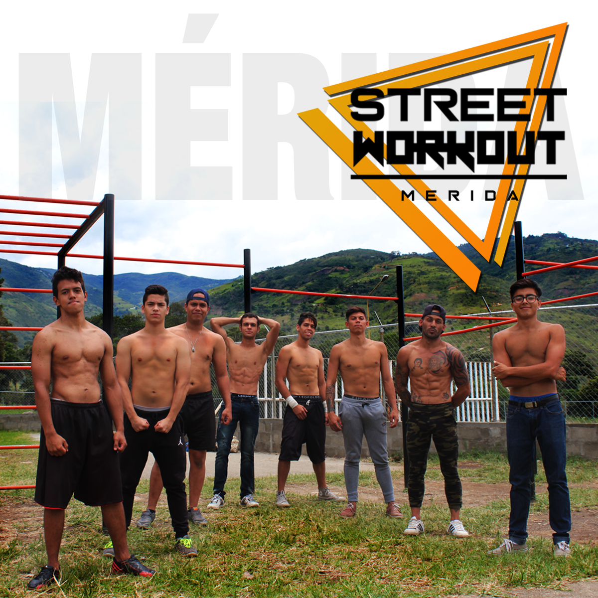
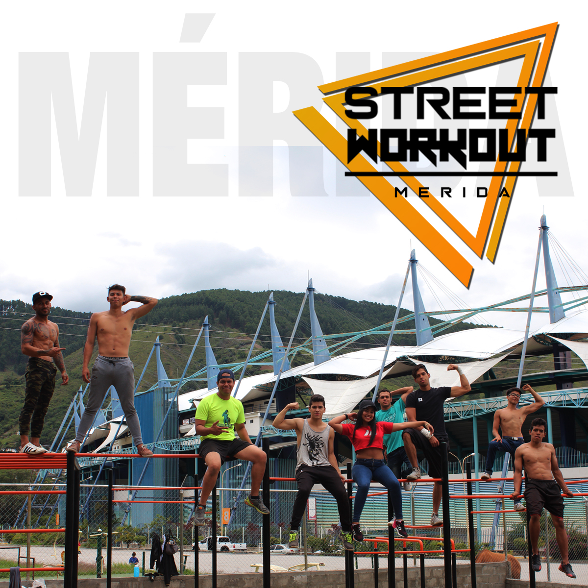
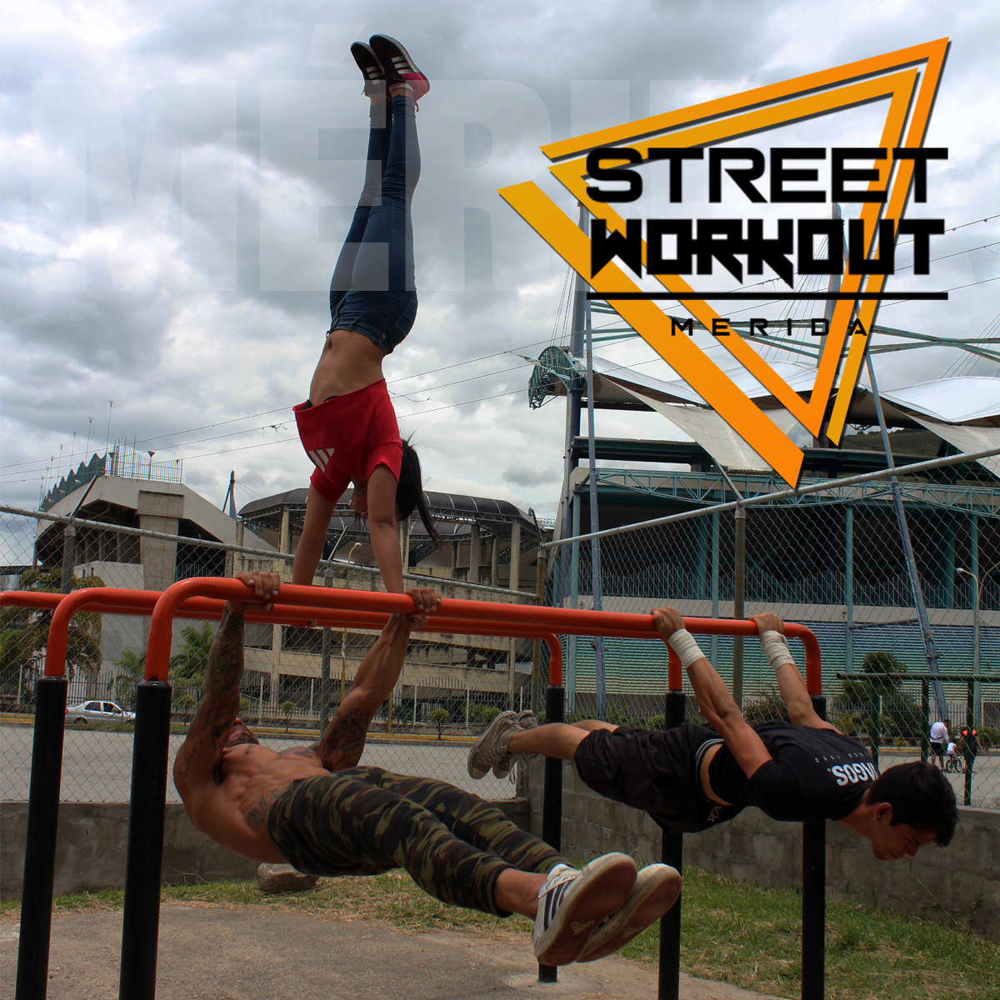
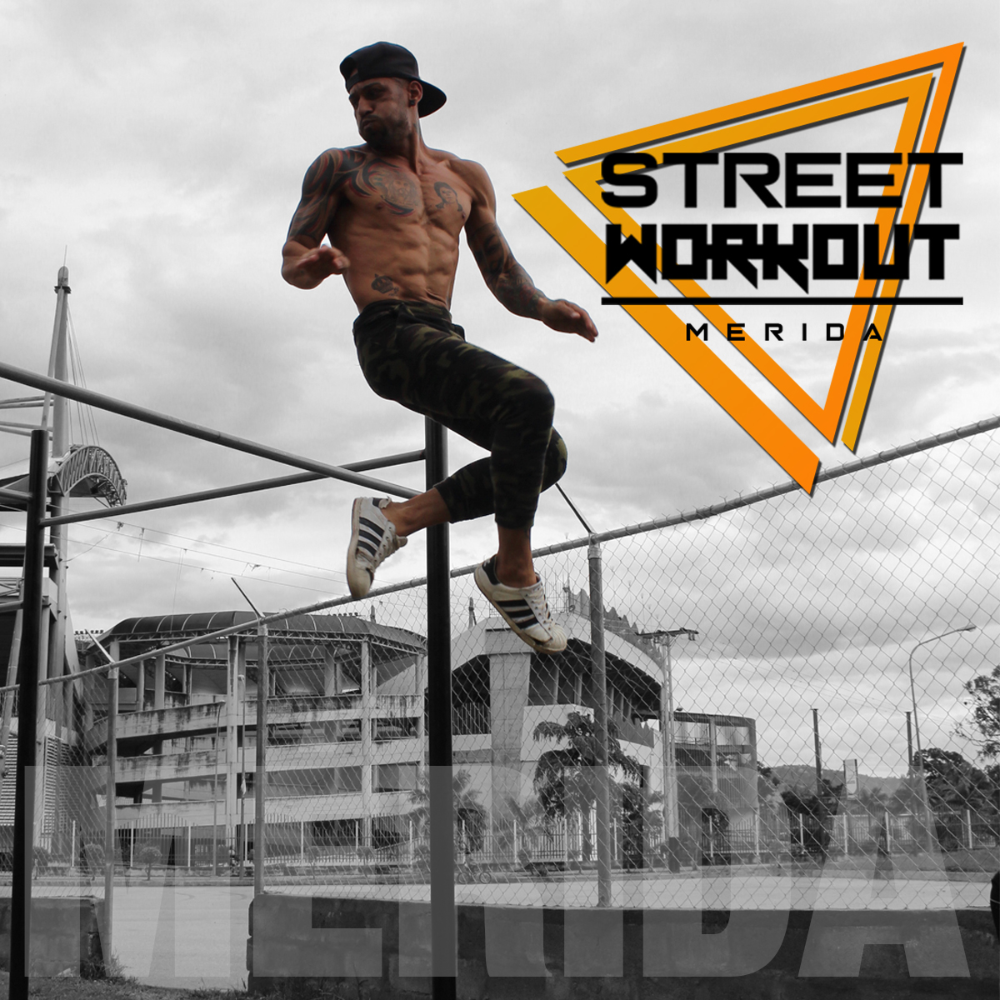

El Street Workout (entrenamiento de calle) es una disciplina deportiva relativamente nueva, dada a conocer a finales de la década pasada como un movimiento socio-deportivo que se basa en el entrenamiento de calle haciendo uso de barras paralelas y barras fijas de distintos niveles, en la disciplina deportiva se usa rutinas con repeticiones de ejercicios de dificultad progresiva que requieren potencia y control del peso corporal, aspectos como los mencionados le da valor social como actividad saludable.
Actualmente el deporte cuenta con 3 categorías:
|  |  |
|  |  |